Ciencias de la Naturaleza
Competencias específicas
Competencia Específica 1
Utilizar dispositivos, recursos digitales y entornos personales y/o virtuales de aprendizaje de forma segura, responsable y eficiente, para buscar información, comunicarse y trabajar de manera individual, en equipo y en red, y para reelaborar y crear contenido digital sobre el medio natural de acuerdo con las necesidades digitales del contexto educativo.
Competencia Específica 2
Plantear y dar respuesta a cuestiones científicas sencillas sobre el medio natural, utilizando diferentes técnicas, instrumentos y modelos propios del pensamiento científico, para interpretar y explicar hechos y fenómenos que ocurren en el medio natural.
Competencia Específica 3
Resolver problemas a través de proyectos interdisciplinares de diseño y de la aplicación del pensamiento computacional, para generar cooperativamente un producto creativo e innovador que responda a necesidades concretas.
Competencia Específica 6
Identificar las causas y consecuencias de la intervención humana en el entorno, desde los puntos de vista tecnológico y ambiental, para mejorar la capacidad de afrontar problemas, buscar soluciones y actuar de manera individual y cooperativa en su resolución, y para poner en práctica estilos de vida sostenibles y consecuentes con el respeto, el cuidado y la protección de las personas y del planeta.
Criterios de evaluación
Competencia Específica 1
1.1 Buscar y organizar información sobre el medio natural utilizando dispositivos y recursos digitales en entornos personales y/o virtuales de aprendizaje de acuerdo con las necesidades del contexto educativo de forma segura.
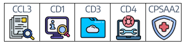
1.2 Reelaborar y crear contenidos digitales sencillos sobre el medio natural a través de aplicaciones y recursos digitales, comunicándose y trabajando de forma individual y en equipo.
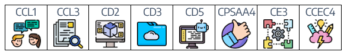
Competencia Específica 2
2.1 Formular preguntas y realizar predicciones razonadas, demostrando curiosidad y respeto por el medio natural cercano.
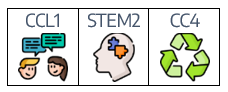
2.2 Buscar y seleccionar información de diferentes fuentes seguras y fiables, utilizándola en investigaciones relacionadas con el medio natural y adquiriendo léxico científico básico.
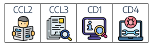
2.3 Realizar experimentos guiados, cuando la investigación lo requiera, utilizando diferentes técnicas de indagación y modelos, empleando de forma segura instrumentos y dispositivos, realizando observaciones y mediciones precisas y registrándolas correctamente.
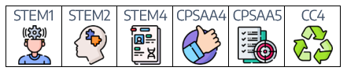
2.5 Presentar los resultados de las investigaciones sobre el medio natural, en diferentes formatos, utilizando un lenguaje científico básico y explicando los pasos seguidos.
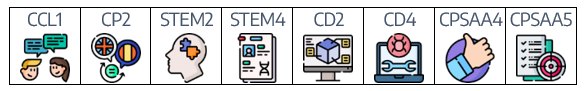
Competencia Específica 3
3.1 Construir en equipo un producto final sencillo que dé solución a un problema de diseño, proponiendo posibles soluciones, probando diferentes prototipos y utilizando de forma segura las herramientas, técnicas y materiales adecuados.
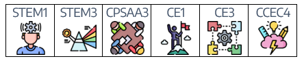
3.2 Presentar el producto final de los proyectos de diseño en diferentes formatos y explicando los pasos seguidos.
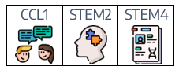
3.3 Resolver, de forma guiada, problemas sencillos de programación, modificando algoritmos de acuerdo con los principios básicos del pensamiento computacional.
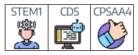
Competencia Específica 6
6.2 Mostrar estilos de vida sostenible y valorar la importancia del respeto, los cuidados, la corresponsabilidad y la protección de los elementos y seres del planeta, identificando la relación de la vida de las personas con sus acciones sobre los elementos y recursos del medio tecnológico y ambiental, y contribuyendo a una conciencia individual y colectiva.
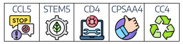
Saberes básicos
BLOQUE A - CULTURA CIENTÍFICA
1- Iniciación a la actividad científica
1. Fases de la investigación científica (observación, formulación de preguntas y predicciones, planificación y realización de experimentos, recogida y análisis de información y datos, comunicación de resultados…).
2. Instrumentos y dispositivos apropiados para realizar observaciones y mediciones precisas de acuerdo con las necesidades de la investigación (medición de voltaje y amperaje con el polímetro y cálculo de consumo).
3. Vocabulario científico básico relacionado con las diferentes investigaciones.
4. Fomento de la curiosidad, la iniciativa, la constancia y el sentido de la responsabilidad en la realización de las diferentes investigaciones.
3- Materia, fuerzas y energía
1. Las formas de energía (mecánica, eléctrica, térmica, luminosa, sonora, magnética, química, nuclear, cinética y potencial). Transformación y transferencia.
2. Fuentes de energía actuales:
- Renovables: solar, eólica, hidroeléctrica, geotérmica, biomasa, marina y nuclear de fusión.
- No renovables: combustibles fósiles (carbón, petróleo y gas) y energía nuclear de fisión.
3. La energía eléctrica. Fuentes, transformaciones, transferencia (pilas y baterías, corriente continua y alterna, polos) y uso en la vida cotidiana (watios, voltios y amperios).
4. Los circuitos eléctricos (abierto, cerrado, cortocircuito, serie y paralelo, polos) y las estructuras robotizadas (automatización e interacción: la domótica).
5. Producción y consumo responsable, impacto local positivo y su influencia en la contribución al desarrollo sostenible de la sociedad.
6. Uso de la energía hoy en día y actuaciones de ahorro en el entorno más cercano (eficiencia energética y consumo kw/hora).
7. Contaminación energética en su entorno más cercano.
BLOQUE B - TECNOLOGÍA Y DIGITALIZACIÓN
1- Digitalización del entorno personal de aprendizaje
1. Dispositivos y recursos digitales de acuerdo con el contexto educativo: miniportátiles.
2. Estrategias de búsqueda de información seguras y eficientes en Internet (valoración, discriminación, selección, organización y propiedad intelectual): navegador Edge, buscador Bing y Copilot.
3. Estrategias de recogida, almacenamiento y representación de datos para facilitar su comprensión y análisis.
4. Reglas básicas de seguridad y privacidad para navegar por Internet y para proteger el entorno digital y personal de aprendizaje.
5. Recursos y plataformas digitales restringidas y seguras para comunicarse con otras personas (Canal de Teams y correo electrónico de Educacyl). Etiqueta digital, reglas básicas de cortesía y respeto y estrategias para resolver problemas en la comunicación digital. Entornos Virtuales de aprendizaje seguros (Microsoft 365: Word, PowerPoint, OneNote y Forms).
2- Proyectos de diseño y pensamiento computacional
1. Fases de los proyectos de diseño: identificación de las necesidades, diseño prototipado, prueba, evaluación y comunicación.
2. Fases del pensamiento computacional (descomposición de una tarea en partes más sencillas, reconocimiento de patrones y creación de algoritmos sencillos para la resolución de un problema…).
3. Materiales, herramientas, objetos, dispositivos y recursos digitales (programación por bloque, sensores, motores, simuladores…) seguros y adecuados a la consecución del proyecto: LEGO Spike Essential y Scratch.
4. Estrategias en situaciones de incertidumbre generadas a partir de contextos de aprendizaje cooperativo: adaptación y cambio de estrategia cuando sea necesario, aceptación y valoración positiva del error propio y el de los demás como oportunidad de aprendizaje.
BLOQUE C - CONCIENCIA ECOSOCIAL
3. Los Objetivos de Desarrollo Sostenible: contribución personal al cumplimiento de los mismos. Estilos de vida sostenible. El consumo y la producción responsables, la alimentación equilibrada y sostenible, el uso eficiente del agua y la energía, la movilidad segura, saludable y sostenible, y la prevención y la gestión de residuos.
Validación del perfil de salida
Competencia Específica 1
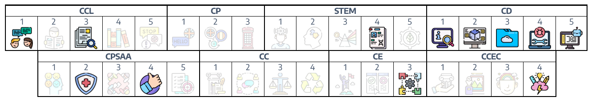
Competencia Específica 2
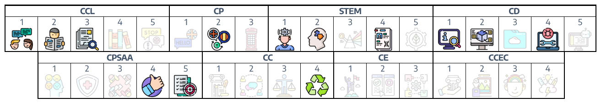
Competencia Específica 3
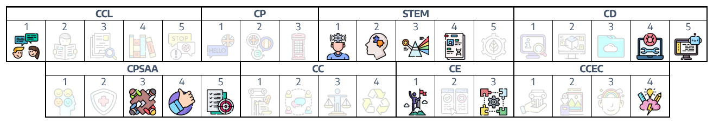
Competencia Específica 6
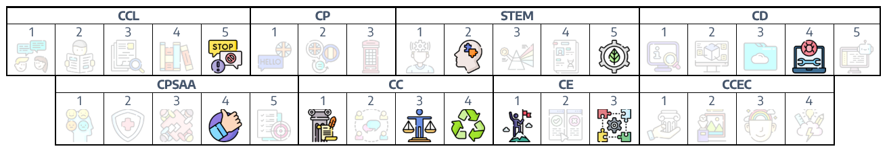
Contribución a los objetivos de la etapa
b) Desarrollar hábitos de trabajo individual y de equipo, de esfuerzo y de responsabilidad en el estudio, así como actitudes de confianza en sí mismo, sentido crítico, iniciativa personal, curiosidad, interés y creatividad en el aprendizaje, y espíritu emprendedor.
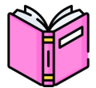e) Conocer y utilizar de manera apropiada la lengua castellana y desarrollar hábitos de lectura.
f) Adquirir en, al menos, una lengua extranjera la competencia comunicativa básica que les permita expresar y comprender mensajes sencillos y desenvolverse en situaciones cotidianas.
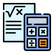g) Desarrollar las competencias matemáticas básicas e iniciarse en la resolución de problemas que requieran la realización de operaciones elementales de cálculo, conocimientos geométricos y estimaciones, así como ser capaces de aplicarlos a las situaciones de la vida cotidiana.
h) Conocer los aspectos fundamentales de las Ciencias de la Naturaleza, las Ciencias Sociales, la Geografía, la Historia y la Cultura.
i) Desarrollar las competencias tecnológicas básicas e iniciarse en su utilización, para el aprendizaje, desarrollando un espíritu crítico ante su funcionamiento y los mensajes que reciben y elaboran.
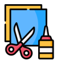j) Utilizar diferentes representaciones y expresiones artísticas e iniciarse en la construcción de propuestas visuales y audiovisuales.
Contribución a los objetivos de desarrollo sostenible
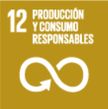12. Garantizar modalidades de consumo y producción sostenibles: El consumo no sostenible produce contaminación y degrada el medioambiente, por lo tanto, es necesario actuar desde la raíz para apostar por sistemas de producción que respeten el entorno y que sean sostenibles. Además, todas las personas deben elegir modos de vida sostenibles para contribuir a cuidar la naturaleza y frenar el cambio climático.
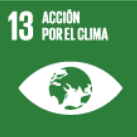13. Adoptar medidas urgentes para combatir el cambio climático y sus efectos: El cambio climático es una realidad y está produciendo efectos negativos en las personas, en la economía y en la naturaleza. Para luchar contra el cambio climático en 2016 varios países firmaron el Acuerdo de París y se comprometieron a trabajar para limitar el aumento de la temperatura global a menos de 2 grados.
Fuente: Educo.org